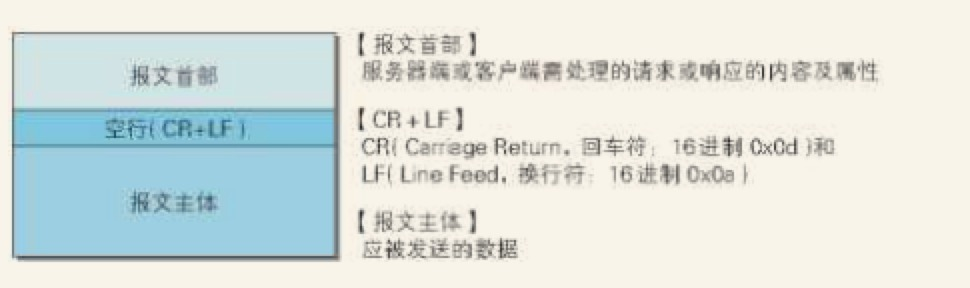
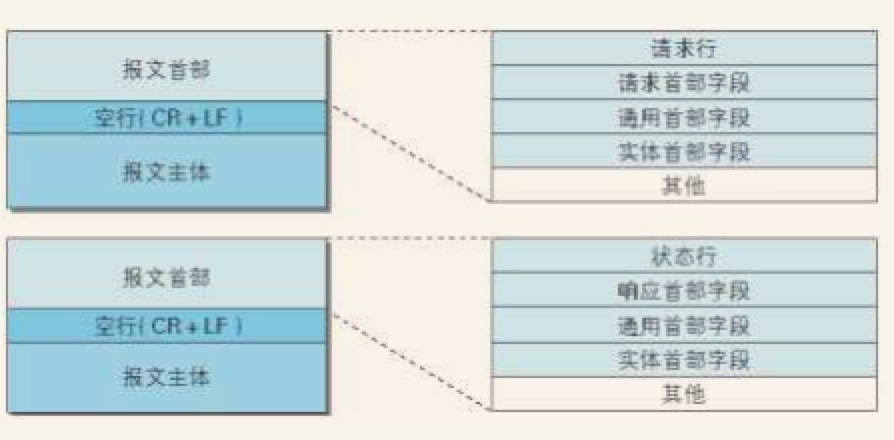
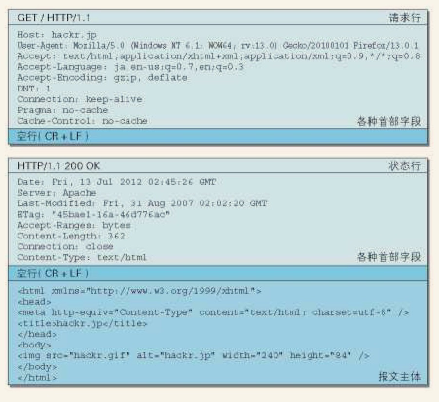
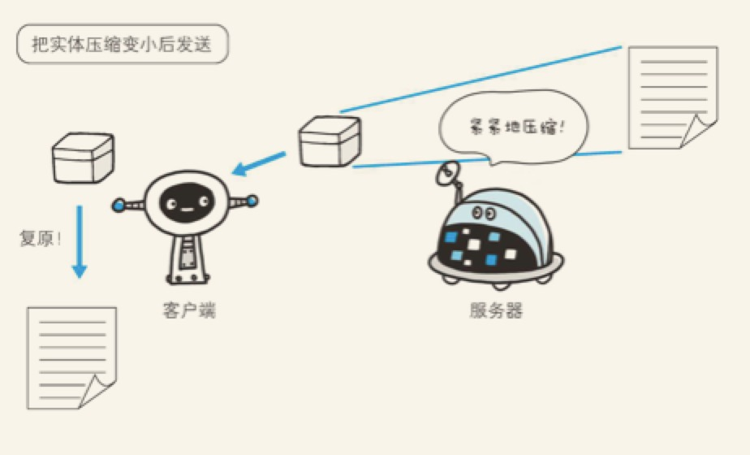
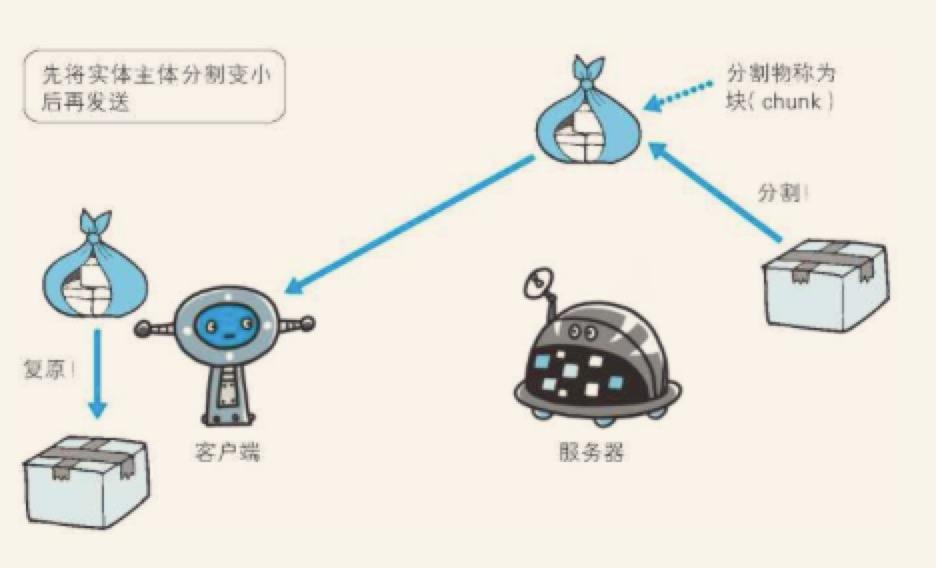
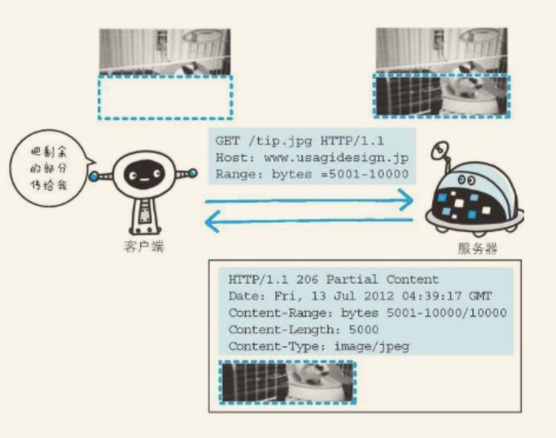

HTTP报文内的HTTP信息
1.HTTP 报文
用于HTTP协议交互的信息被称为HTTP报文。请求端的HTTP报文叫做请求报文，响应端的报文叫响应报文。
HTTP报文是由多行（用CR+LF作换行符）数据构成的字符串文本。
HTTP报文大致可分为报文首部和报文主体两块。两者由最初出现的空行（CR+LF）来划分。通常，并不一定要有报文主体。

2.请求报文和响应报文的结构
请求报文和响应报文的结构

请求报文和响应报文的实例

请求报文和响应报文的首部内容由一下内容组成：
- 请求行 （包含用于请求的方法，请求URI和HTTP版本）
- 状态行 （包含表明响应结果的状态码、原因短语和HTTP版本）
- 首部字段 （包含标识请求和响应的各种条件和属性的各类首部。一般有四种首部，分别是：通用首部、请求首部、响应首部和实体首部）
- 其他 （可能包含HTTP的RFC里未定义的首部（cookie等））
3.编码提升传输速率
HTTP在传输数据时可以按照数据原貌直接传输，但也可以在传输过程中通过编码提升传输速率。在传输时编码，能有效地处理大量的访问请求。但是编码的操作需要计算机完成，因此会消耗更多的CPU资源。
3.1报文主体和实体主体的差异
报文（message）
是HTTP通信中的基本单位，由8位组字节流（octetsequence，其中ocet为8个比特）组成，通过HTTP通信传输。
实体（entity）
作为请求或响应的有效载荷数据被传输，其内容由实体首部和实体主体组成。
HTTP报文的主体用于传输请求或响应的实体主体
通常，报文主体等于实体主体。只有当传输中进行编码操作时，实体主体的内容发生变化，才导致它和报文主体产生差异。
3.2压缩传输的内容编码
向待发送邮件内增加附件时，为了使邮件容量变小，我们会先用ZIP压缩文件之后再添加附件发送。HTTP协议中有一种被称为内容编码的功能也能进行类似的操作。
内容编码指明应用在实体内容上的编码格式，并保持实体信息原样压缩。内容编码后的实体由客户端接受并负责解码。

常用的内容编码有以下几种
- gzip (GNU zip)
- compress (UNIX 系统的标准压缩)
- deflate (zlib)
- identity (不进行编码)
3.分割发送的分开传输编码
在HTTP通信过程中，请求的编码实体资源尚未全部传输完成之前，浏览器无法显示请求页面。在传输大容量数据时，通过把数据分割成多块，能够让浏览器逐步显示页面。
这种把实体主体分块的功能称为分块传输编码

分块传输编码会将实体分成多个部分（块）。每一块都会用十六进制来标记块的大小，而实体主体的最后一块会使用“0（CR+LF）来标记”
使用分块传输编码的实体主体会由接受的客户端负责解码，恢复到编码的实体主体。
4.发送多种数据的多部分对象集合
发送邮件时，我们可以在邮件里写入文字并添加多份附件。这是因为采用了MIME机制，它允许邮件处理文本、图片、视频等多个不同类型的数据。例如，图片等二进制数据以ASCII码字符串编码的方式指明，就是利用MIME 来描述标记数据类型。而在MIME扩展中会使用一种称为多部分对象集合的方法，来容纳多份不同类型的数据。
相应地，HTTP协议中也采纳了多部分对象集合，发送的一份报文主体内可含有多类型实体。通常是在图片或文本文件等上传时使用。
多部分对象集合包含的对象如下：
-
multipart/form-data
在Web 表单文件上传时使用
1
2
3
4
5
6
7
8
9“Content-Type: multipart/form-data; boundary=AaB03x
--AaB03x
Content-Disposition: form-data; name="field1"
Joe Blow
--AaB03x
Content-Disposition: form-data; name="pics"; filename="file1.txt"
Content-Type: text/plain
...（file1.txt的数据）...
--AaB03x--” -
multipart/byteranges
状态码206 （部分内容）响应报文包含了多个范围的内容时使用
1
2
3
4
5
6
7
8
9
10
11
12
13“HTTP/1.1 206 Partial Content
Date: Fri, 13 Jul 2012 02:45:26 GMT
Last-Modified: Fri, 31 Aug 2007 02:02:20 GMT
Content-Type: multipart/byteranges; boundary=THIS_STRING_SEPARATES
--THIS_STRING_SEPARATES
Content-Type: application/pdf
Content-Range: bytes 500-999/8000
...（范围指定的数据）...
--THIS_STRING_SEPARATES
Content-Type: application/pdf
Content-Range: bytes 7000-7999/8000
...（范围指定的数据）...
--THIS_STRING_SEPARATES--”
在HTTP报文中使用多部分对象集合时，需要在首部字段里加上Content-type。
使用 boundary 字符串来划分多部分对象集合指明的各类实体。在 boundary 字符串指定的各个实体的起始行之前插入“–”标记（例如：–AaB03x、–THIS_STRING_SEPARATES），而在多部分对象集合对应的字符串的最后插入“–”标记（例如：–AaB03x–、--THIS_STRING_SEPARATES–）作为结束。
5.获取部分内容的范围请求
以前，用户没有现在这种高速的宽度访问互联网呢，当时下载一个很大的文件或者图片非常吃力。如果下载过程中遇到中断，就得重新下载。为了解决上述问题，需要一种回复的机制。所谓恢复是指能从之前下载中断处恢复下载。
要实现该功能需要指定下载的实体范围。像这样，制定范围发送的请求叫做范围请求。
对一份10000字节大小的资源，如果使用范围请求，可以只请求5001-10000字节内的资源

执行范围请求时，会用到首部字段Range 来指定资源的byte范围。
byte 范围的指定形式如下：
- 5001-10000 字节
1 | Range:bytes=5001-10000 |
- 从5001字节之后全部的
1 | Range:bytes=5001- |
- 从一开始到3000字节和5000-7000字节的多重范围
1 | Range:bytes=3000,5000-7000 |
针对范围请求，响应会返回状态码为206的响应报文。另外，对于多重范围的范围请求，响应会在首部字段Content-Type 表明multipart/byteranges 后返回响应报文
如果服务器端无法响应范围请求，则会返回状态码200 OK 和完整的实体内容
6.内容协商返回合适的内容
同一个WEB 网站有可能存在着多份相同内容的页面。比如英语版和中文版的web页面。他们内容上虽然相同，但使用的语言却不同。
当浏览器的默认语言为英语或中文，访问相同URI的Web 页面时，则会显示对应的英语版或中文版的Web页面。这样的机制称为内容协商。
内容协商机制是指客户端和服务器端就响应的资源内容进行交涉，然后提供给客户端最为适合的资源。内容协商会以响应资源的语言、字符集、编码方式等作为判断的基准。
包含在请求报文中的某些首部字段就是判断的基准
- Accept
- Accept-Charset
- Accept-Encoding
- Accept-Language
- Content-Language
内容协商技术有以下3种类型
服务器驱动协商
由服务器端进行内容协商。以请求的首部字段为参考，在服务端自动处理。
客户端驱动协商
由客户端进行内容协商的方式。用户从浏览器显示的可选项列表中手动选择
透明协商
是服务器驱动和客户端驱动的结合体，是由服务器端和客户端各自进行内容协商的一种做法